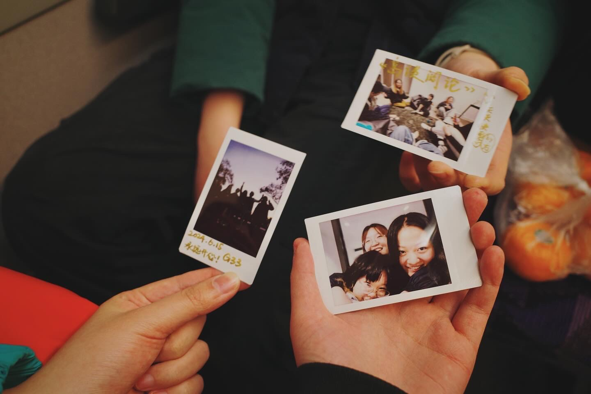

Hello and welcome!
I'm GUO Shanshan, and this space is dedicated to the wonderful friends I met in Melbourne.
In this digital garden, you'll find memories captured through photos, stories, and reflections that celebrate the vibrant connections we built.
(▰˘◡˘▰)
Whether you were part of this journey or are here to witness it, I invite you to explore and reminisce with me.
Whether you were part of this journey or are here to witness it, I invite you to explore and reminisce with me.
This is more than just a website; it's a living memorial of the laughter, adventures, and unforgettable moments we shared.
Explore Our Moments
Click 'emoji' to explore our journeys through photos — each one tells a story of friendship, fun, and unforgettable experiences.